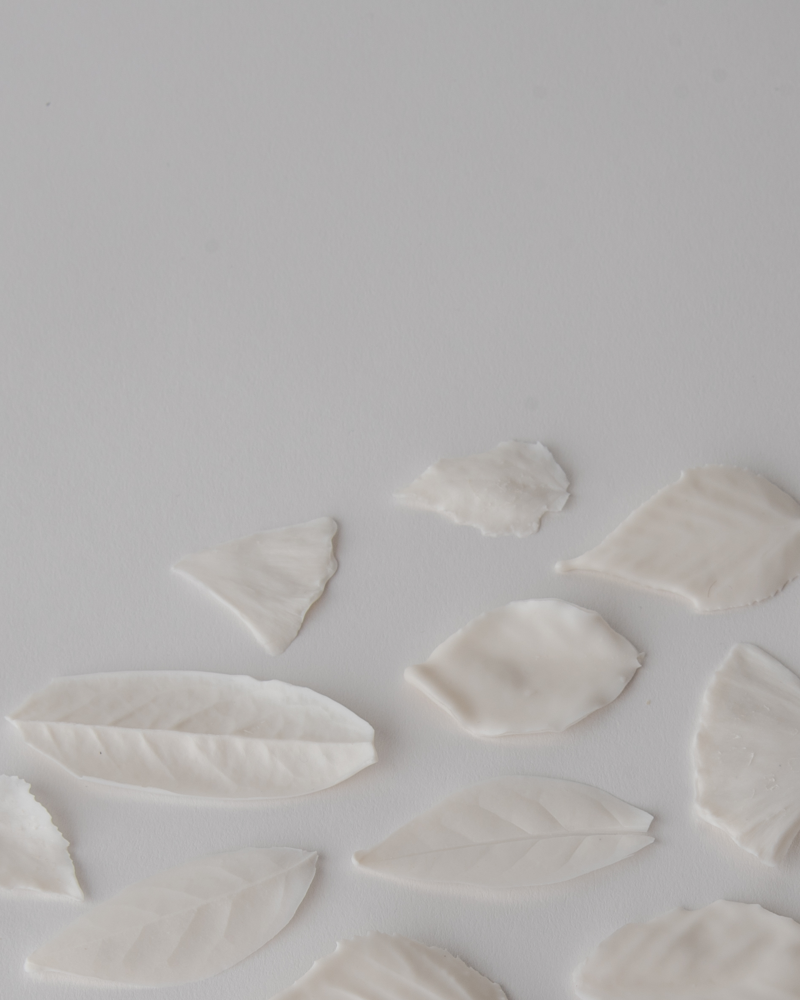
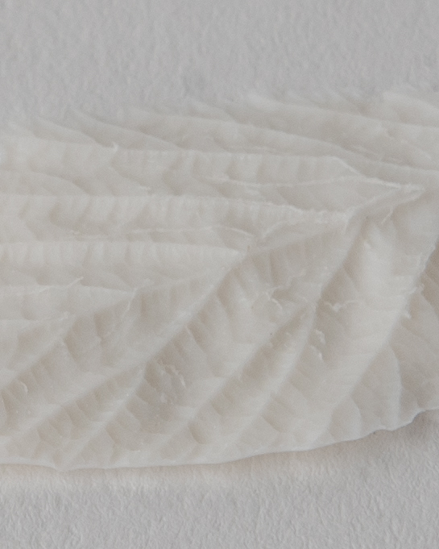

Prvi korak je nabiranje listkov. V gozdu, ob pločniku. Na vrtu, na grmičku.
Drugi korak je previdno namakanje v tekoč porcelan, dokler plast porcelana na listku ni dovolj močna.
Tretji korak je sušenje na zraku. Mnogo listkov v tem koraku odpade, se odkruši ali zvije.
Četrti korak je žganje v peči na visoki temperaturi. Organski list zgori, za sabo pa pusti fosil iz porcelana.
V petem koraku se odločim, kako se bo končala pot listkov — bodo ogrlice, uhani ali kaj drugega?
V zadnjem koraku listke oblečem v srebrne verige in obročke, da nastanejo končni izdelki.

Sem Sašo, biokemik in oblikovalec. Uživam ob spoznavanju materialov in rokodelskih tehnik. Opazujem in ustvarjam na preseku oblikovanja in narave. Listki so se zgodili spontano, in se počasi nadaljujejo :)